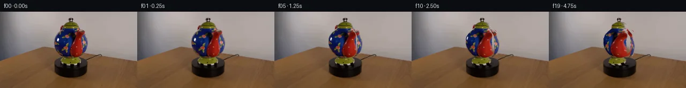

![首帧]()

Round 00
2026-11-05T18:46:39.138275+00:00像素候选变化代码 +235/−0inspection 更新
pixels 5babfa7ae1600dce · code 8408c4c82c0fcbf7
查看本轮 generate.py 真实 diff
--- previous/generate.py
+++ current/generate.py
@@ -0,0 +1,235 @@
+"""Source-pixel 2.5D axial rotation. No external rendering engine or model."""
+from pathlib import Path
+import json
+import math
+import numpy as np
+import cv2
+from PIL import Image, ImageDraw
+from scipy.ndimage import gaussian_filter1d
+from artifact_io import save
+
+ROOT = Path(__file__).resolve().parent
+S = 3
+W, H = 256, 144
+AXIS = 131.8
+ELEV = math.asin(10.0 / 31.0)
+SE = math.sin(ELEV)
+original = np.asarray(Image.open(ROOT / 'first_frame.png').convert('RGB'))
+source = original.astype(np.float32)
+
+
+def polygon(points):
+ im = Image.new('L', (W*S, H*S), 0)
+ ImageDraw.Draw(im).polygon([(round((x+.5)*S), round((y+.5)*S)) for x,y in points], fill=255)
+ return np.asarray(im).astype(np.float32) / 255.
+
+
+def up(a, method=cv2.INTER_LINEAR):
+ return cv2.resize(a, (W*S,H*S), interpolation=method)
+
+
+def sample(a, mx, my):
+ # The source is stored on a supersampled pixel-center grid.
+ return cv2.remap(a, ((mx+.5)*S-.5).astype(np.float32),
+ ((my+.5)*S-.5).astype(np.float32),
+ cv2.INTER_LINEAR, borderMode=cv2.BORDER_CONSTANT)
+
+Y, X = np.mgrid[0:H*S, 0:W*S].astype(np.float32)
+X = (X+.5)/S-.5
+Y = (Y+.5)/S-.5
+
+# Full photographed outline, measured in the input coordinate system.
+outline = polygon([
+ (127.5,10.5),(136,10.5),(138,15),(136,19),(141,21),
+ (145,24),(148,28),(149,32),(154,34),(158,38),(160,44),
+ (162,49),(164,53),(164,63),(163,67),(161,73),(159,77),
+ (155,80),(151,83),(148,85),(151,89),(152,95),(150,99),
+ (144,101),(121,101),(114,99),(111,95),(113,90),(117,86),
+ (115,84),(111,81),(107,77),(104,72),(101,67),(100,62),
+ (100,51),(102,46),(105,41),(109,37),(111,32),(112,28),
+ (114,25),(118,25),(121,22),(126,20),(128,19),(127,15)])
+
+# A local estimate of the warm wall is used only to trim outline pixels and
+# open the narrow handle aperture. Broad hidden regions are inpainted below.
+wall = np.zeros_like(source)
+for yy in range(H):
+ for c in range(3):
+ wall[yy,:,c] = np.interp(np.arange(W), [96,171],
+ [source[yy,96,c],source[yy,171,c]])
+distance = up(np.linalg.norm(source-wall,axis=2))
+edge_distance = cv2.distanceTransform((outline>.5).astype(np.uint8), cv2.DIST_L2,3)/S
+trim = np.clip((distance-10)/20,0,1)
+# Preserve enclosed light floral details; trim only the outside margin.
+outline *= np.where((Y<67)&(edge_distance<1.4),trim,1)
+aperture = (X>153)&(X<163)&(Y>35)&(Y<67)
+outline *= np.where(aperture,np.clip((distance-13)/20,0,1),1)
+
+body_shape = polygon([
+ (116.5,30.7),(143,30.7),(147,34),(150,38),(152,43),
+ (152.7,49),(153.3,59),(153.2,67),(152.7,73),(151.5,78),
+ (149,81.5),(145.5,84.3),(139,86.6),(124,86.6),(116,84),
+ (111,80),(106.5,75),(103,70),(100,63),(100,52),
+ (101.8,47),(104.5,43),(108,38),(112,34)])
+body_mask = np.minimum(outline, body_shape)
+foot_mask = outline * (Y>=84.2).astype(np.float32)
+lid_mask = outline * ((Y>=19.0)&(Y<31.3)&(X>117.1)).astype(np.float32)
+knob_mask = outline * (Y<19.0).astype(np.float32)
+spout_region = ((X<119.2)&(Y>=24)&(Y<42)).astype(np.float32)
+spout_mask = outline * spout_region * (1-body_shape)
+# The remaining photographed rim/handle pixels form the moving rear layer.
+covered = np.maximum.reduce([body_mask,foot_mask,lid_mask,knob_mask,spout_mask])
+handle_mask = np.clip(outline-covered,0,1)
+
+# Reconstruct only pixels hidden by the original teapot. The wall, tabletop,
+# black platform and camera stay fixed outside this source silhouette.
+small_mask = cv2.resize(outline,(W,H),interpolation=cv2.INTER_AREA)
+inpaint_mask = cv2.dilate((small_mask>.01).astype(np.uint8), np.ones((3,3),np.uint8)) * 255
+reconstructed = cv2.inpaint(original,inpaint_mask,5,cv2.INPAINT_TELEA).astype(np.float32)
… diff truncated; 148 more lines …